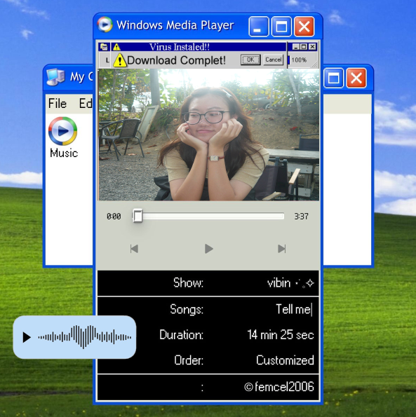
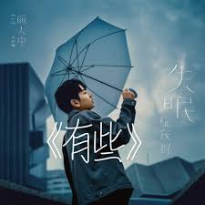
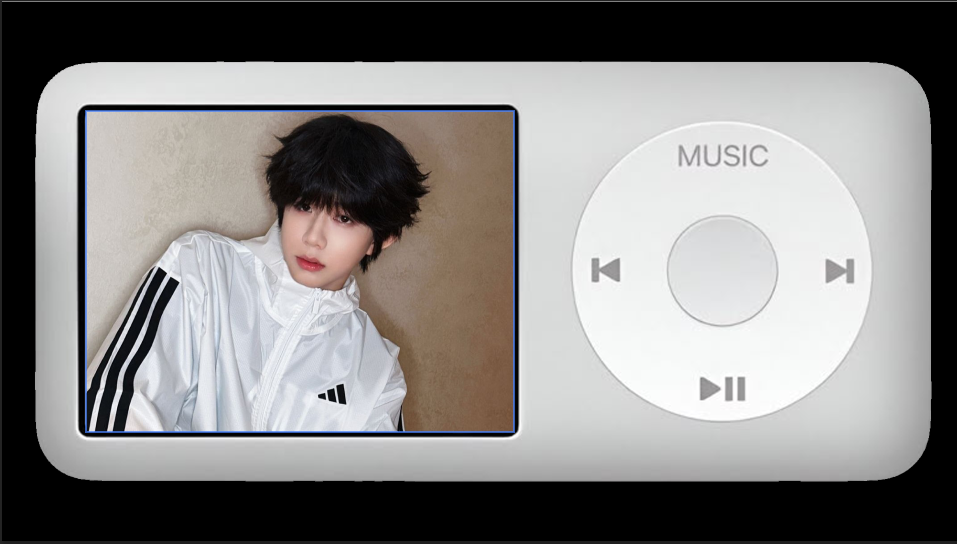
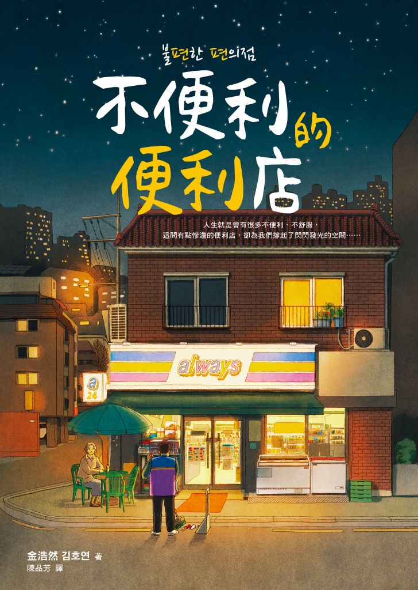
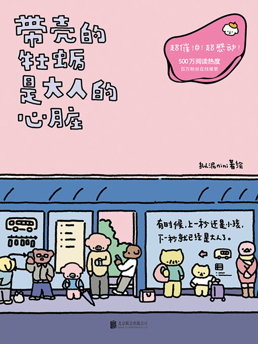

:: GALAXY ARCHIVE // MY FAVORITES ::

🎵 MUSIC VIDEO_LOGS.mp4
HERE ARE MY FAVOURITE SONG. I ALWAYS GET SOME ENERGY FROM HERE.
Rainie Love by Rainie Yang
This is a song that's perfect for listening to on a rainy day.
▶ Watch on YouTubeLiang San Bo Yu Zhu Li Ye by Genie Zhuo & Gary Chaw
A very upbeat song. I like to listen to it when I feel sad.
▶ Watch on YouTube
Still Waiting by Ele Yan
A nostalgic song with emotional lyrics and a soothing melody.
▶ Watch on YouTubeYou Complete Me by Crowd Lu
A warm and comforting song that always lifts my mood.
▶ Watch on YouTube⭐ People.dat
HERE IS MY FAVOURITE IDOL.
MAJIAQI LEADER OF TEENS IN TIMES, SINGER, ACTOR
Slow Cooling
I really like his singing voice, it's perfect for R&B. That's my favourite.
▶ Watch Performance
CHAN JONATHAN YIHENG TRAINEE OF TF FAMILY
📖 TEXT_ARCHIVE.txt

《不便利的便利店》
The main character is a homeless man who lost his memory. One day, he helps an old woman get her stolen bag back. To thank him, she takes him in and gives him a night job at her shop, the "Always Convenience Store."

《帶殼的牡蠣是大人的心臟》
The book uses bright candy colors and a very cute, childlike art style. Just looking at it makes you feel relaxed right away.
MEMORY LOADED : 75%